Motosserra DCS-3500T + Pack
A ECHO DCS-3500T é uma motosserra a bateria desenvolvida para profissionais.
989,00€
Ver detalhesMotos · Bicicletas · Jardinagem
Aqui encontra as condições gerais para compra de equipamentos e serviços na oficina Joaquim Luís Simões.
Modelos adicionais em stock ajustados para diferentes intensidades de corte florestal e agrícola.
A ECHO DCS-3500T é uma motosserra a bateria desenvolvida para profissionais.
989,00€
Ver detalhes
Motosserra a bateria para poda, com tecnologia avançada e grande controlo.
669,01€
Ver detalhes
Motosserra a bateria desenvolvida para profissionais exigentes.
619,00€
Ver detalhes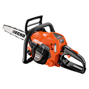
Nova geração de motosserras a bateria para poda.
319,00€
Ver detalhes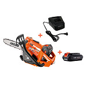
Chassis robusto de alta cilindrada para trabalhos florestais duros.
349,00€
Ver detalhes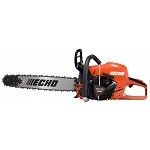
Equilíbrio ótimo entre peso e potência para uso agrícola diário.
659,00€
Ver detalhes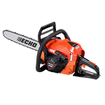
Carburador eletrónico otimizado para consumo reduzido.
569,00€
Ver detalhes
Sistema de arranque fácil com mola, ideal para utilizadores ocasionais.
1199,00€
Ver detalhes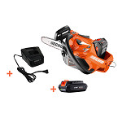
Equipada com sistemas avançados antivibração nos punhos.
999,00€
Ver detalhes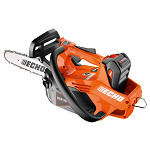
Componentes internos em liga de magnésio de alta durabilidade.
799,00€
Ver detalhesModelos adicionais manuais, elétricos, térmicos ou robóticos para manter o relvado impecável.

Corta-relva concebida para resultados profissionais em qualquer terreno.
1139,00€
Ver detalhes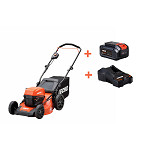
Corta relvados de forma eficiente, sem esforço e com resultados profissionais.
779,00€
Ver detalhes
Resultados profissionais sem o incómodo dos cabos ou do combustível.
729,00€
Ver detalhes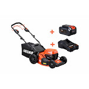
Motor a quatro tempos fiável para superfícies sem acesso a eletricidade.
629,00€
Ver detalhes
Modelo Garden+ com desempenho e usabilidade para jardins residenciais.
579,00€
Ver detalhes
Parte da linha Garden+, combina desempenho e facilidade de uso.
499,00€
Ver detalhes
Modelo Garden+ para jardins médios, leve e fácil de manobrar.
449,00€
Ver detalhes
Resultados profissionais em qualquer tipo de terreno.
749,00€
Ver detalhes
Linha Garden+ para transformar o seu espaço exterior.
529,00€
Ver detalhes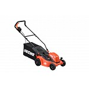
Solução sem cabos com resultados profissionais.
579,00€
Ver detalhesModelos adicionais indicados para cortes de cantos, ervas densas, silvados ou limpeza de valas.

Aparador ergonómico ideal para contornos de canteiros e calçadas.
519,00€
Ver detalhes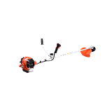
Leveza estrutural sem emissões de gases.
669,01€
Ver detalhes
Motor a dois tempos ágil para limpeza frequente de mato fino.
1138,99€
Ver detalhes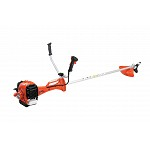
Kit multifunções para diferentes tarefas de corte.
1059,00€
Ver detalhes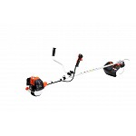
Elevado poder de arranque e rotação estável.
678,99€
Ver detalhes
Mochila ergonómica traseira ideal para encostas íngremes.
889,00€
Ver detalhes
Cabeça de fio de nylon com avanço automático.
739,00€
Ver detalhes
Para cortar arbustos e ramagens densas.
678,99€
Ver detalhes
Inclui disco metálico dentado de alta resistência.
359,00€
Ver detalhes
Guiador duplo ajustável para melhor distribuição de peso.
319,00€
Ver detalhes💡 Informação de Navegação: Para ver os 10 modelos complementares em exposição nesta secção, escolha e clique em "Fazer Encomenda" num dos artigos principais da nossa Loja.
Preço: 989,00€
🛒 Comprar / Adicionar à encomendaPreço: 669,01€
🛒 Comprar / Adicionar à encomenda